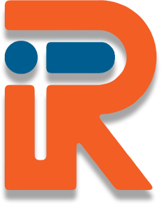

Olá!
Eu sou Ítalo Rizzon, seja bem vindo ao meu portifólio
Eu sou Ítalo Rizzon, seja bem vindo ao meu portifólio
Nasci em 13 de Fevereiro de 1999, na cidade de Uberlândia-MG. Cresci jogando jogos de tabuleiro, Magic: The Gathering e Video-games. Sempre gostei de estratégia e solução de problemas.
Atualmente curso Técnico em Desinvolvimento de Sistemas no Senac Minas. Sempre fui muito criativo, com o tempo fui me tornando bem proativo também, pontos que me influenciaram a interessar pela área.
Estou Aberto a oportunidades de emprego, com intuito de contribuir e aprender. Caso meu perfil se encaixe não hesite em me contatar, conecte-se comigo.